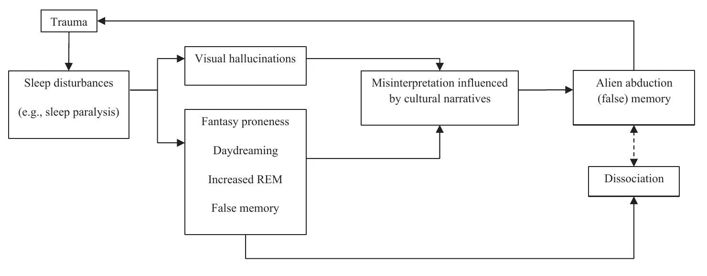

In this chapter, I propose a description of the links between dissociation and alien abduction allegation. To do so, I first describe the controversies surrounding the etiology of dissociation to conclude that the sociocognitive model, which acknowledges social, cognitive, and cultural variables as factors in the development of dissociation, probably best explains the relationship between the two central concepts of the chapter. For example, it appears that the common correlates of dissociation and alien abduction claims are fantasy proneness and sleep disturbances, particularly sleep paralysis, which is often accompanied by visual hallucinations that can be interpreted as the presence of aliens. In conclusion, the link between dissociation and alien abduction allegation appears to be indirect, but a measure of dissociation in people reporting such experiences could serve as a good starting point to investigate the genuineness of the claims.
According to NASA, our galaxy, the Milky Way, contains at least 100 billion stars. The observable universe is estimated to contain at least 100 billion galaxies. The probability that in the universe, or even in the Milky Way, a solar system other than our own hosts a planet that could support life is highly credible. However, it seems less credible that these hypothetical alien life forms have arrived on Earth without our knowledge. Even further, there is no credible evidence of such an invasion that we know of. Thus, it seems even less credible that people have been abducted by aliens; insofar as to prove that they were abducted by aliens, one would already have to prove that the aliens reached planet Earth, which also requires evidence of the existence of aliens. The more unproven phenomena there are between an assertion and the phenomenon that is the subject of the assertion, the less credible the assertion is.
One piece of evidence may be testimony. The fact is that there are people who claim to have been abducted by aliens. Is this level of evidence sufficient to conclude that (i) aliens exist, (ii) they have come to Earth, and (iii) they are abducting people from Earth? Certainly not. However, what is characteristic of this kind of testimony is that the people sometimes seem so sure of themselves that it is credible that they are intimately convinced of this. In fact, it seems that many people report alien abductions. Work conducted in the U.S. in the s has documented tens of thousands of reports of such experiences Appelle, S., Lynn, S.J., Newman, L. & Malaktaris, A.: Alien abduction experiences, in Cardeña, E., Lynn, S.J. & Krippner, S. (eds.): Varieties of anomalous experience: Examining the scientific evidence, Washington, D.C., American Psychological Association, , pp. 213-240. However, the popularity of an apparent phenomenon does not make it true (i.e., argumentum ad populum). It is then necessary to look for the most parsimonious explanation in the light of fundamental epistemological principles related to the development of scientific theories.
Of course, given the lack of evidence for the very existence of aliens, we might consider that the most efficient and simplest explanation would be lies or deception. The problem with this explanation is that it is based on the premise that such experiences are necessarily false, and that they can only be the product of a desire to deceive others, without even knowing what the purpose would be. Of course, some people may make up such stories. But if, as mentioned earlier, there are tens of thousands, if not more, allegations of alien abduction, it is reasonable to look for parsimonious alternative explanations. It is even more necessary to take these claims seriously because people who claim to have been abducted by aliens appear to have similar psychophysiological responses to the abduction event as highly traumatized people McNally, R.J., Lasko, N.B., Clancy, S.A., Macklin, M.L., Pitman, R.K. & Orr, S.P.: Psychophysiological responding during script-driven imagery in people reporting abduction by space aliens, Psychological Science, vol. 15, n° 7, , pp. 493-497. This result suggests that these individuals are truthful and genuinely convinced that they have been abducted by aliens. Among the explanations are those of psychological phenomena and psychopathological disorders. Among the phenomena that can induce the impression of having been abducted by aliens, or even having a specific and precise memory of it, we can mention, for example, false memories, but also broader psychological conditions such as dissociation, which is the subject of interest in this chapter.
Dissociation is the subject of much debate in the literature as to its etiology, and these debates are of importance to the topic. Indeed, the sociocognitive etiological model of dissociation points to numerous correlates that can be linked more or less directly to experiences such as alien abduction. For this reason, the sociocognitive model of dissociation will be described, and its links with fantasy proneness, false memory and unusual sleep experiences will be reviewed in detail, since these are the most relevant correlates for connecting dissociation to alien abduction allegations.
Dissociation is a rather paradoxical psychological
concept. Although complicated to define on a scientific and clinical level, and
despite the number of points of ignorance about it, it is the subject of much popularity in the media and is often presented in a misleading way in movies such as Fight Club or, more recently,
Split. The fifth edition of the Diagnostic and Statistical Manual of Mental Disorders (DSM-5) describes dissociation
as a disruption and/or discontinuity in the normal integration of consciousness, memory, identity, emotion,
perception, body representation, motor control and behavior
American Psychiatric
Association: Diagnostic and Statistical Manual of Mental Disorders, 5th ed., Arlington (Virginia),
American Psychiatric Publishing, , p. 291. More precisely, it suggests
that dissociation may occur in every area of psychological functioning
American
Psychiatric Association: Diagnostic and Statistical Manual of Mental Disorders, 5th ed., Arlington
(Virginia), American Psychiatric Publishing, , p. 291. As with many
psychological phenomena, dissociation can affect anyone, but can occur to an extent that makes it pathological,
although the distinction between pathological and non-pathological dissociation is not always easy to make Giesbrecht, T., Lynn, S.J., Lilienfeld, S.O. & Merckelbach, H.: Cognitive processes in dissociation: An analysis of core
theoretical assumptions, Psychological Bulletin, vol. 134, n° 5, , pp. 617-647. In addition, dissociation can be expressed in many
different ways: sudden loss of attention and failure to integrate information into memory, fantasizing,
daydreaming, being absorbed in content (e.g., a movie). In its pathological dimension, the DSM-5 indicates that
dissociation can lead to amnesia (i.e., dissociative amnesia), the development of several identities (i.e.,
dissociative identity disorder), or the feeling of being in an unreal environment, outside one’s own body and
thoughts and actions (i.e., depersonalization/derealization disorder). The prevalence of these disorders is
relatively high, since, for example, the DSM-5 states that 1.8% of the
population has suffered from dissociative amnesia, 1.5% from dissociative identity disorder, and about 2% from
depersonalization/derealization American Psychiatric Association: Diagnostic and
Statistical Manual of Mental Disorders, 5th ed., Arlington (Virginia), American Psychiatric Publishing,
. Thus, these disorders probably affect several million people,
making dissociation and its disorders a public health issue.
One of the characteristics of dissociation is that it can also occur as a symptom of other disorders. For example, the DSM-5 American Psychiatric Association: Diagnostic and Statistical Manual of Mental Disorders, 5th ed., Arlington (Virginia), American Psychiatric Publishing, lists dissociative amnesia as a potential symptom of post-traumatic stress disorder. The manual also lists depersonalization/derealization as a symptom of panic disorder. What will then distinguish dissociative features as symptoms or markers of a dissociative disorder will be the presence or absence of other symptoms that are either characteristic of another disorder or characteristic of a dissociative disorder. In any case, dissociation in its pathological dimension is extremely complex and the cause (or consequence) of many comorbidities, making the need for differential diagnoses greater. Recent work has even highlighted the transdiagnostic nature of dissociation in that it may be a risk factor for all forms of psychopathology Ellickson-Larew, S., Stasik-O’Brien, S.M., Stanton, K. & Watson, D.: Dissociation as a multidimensional transdiagnostic symptom, Psychology of Consciousness: Theory, Research, and Practice, vol. 7, n° 2, , pp. 126-150. Another supporting datum is that the prevalence of dissociation in clinical populations (i.e., populations diagnosed with a psychopathological disorder) is much higher than that in the general population—i.e., ranging from 12 to 35% in clinical populations (depending on the study Lipsanen, T., Korkeila, J., Peltola, P., Järvinen, J., Langen, K. & Lauerma, H.: Dissociative disorders among psychiatric patients, European Psychiatry, vol. 19, n° 1, , pp. 53-55 Ross, C.A., Duffy, C.M.M. & Ellason, J.W.: Prevalence, reliability and validity of dissociative disorders in an inpatient setting, Journal of Trauma & Dissociation, vol. 3, n° 1, , pp. 7-17), versus 4% in the general population Lipsanen, T., Korkeila, J., Peltola, P., Järvinen, J., Langen, K. & Lauerma, H.: Dissociative disorders among psychiatric patients, European Psychiatry, vol. 19, n° 1, , pp. 53-55.
To sum up, dissociation is a major point in the psychological literature that is quite difficult to define: it may refer to everyday and totally benign phenomena, it may be symptomatic of psychopathological disorders, but it may also constitute a psychopathological disorder in itself. The complexity then lies in the identification of potential pathological forms and in the correct interpretation of the symptoms.
Historically, there have been two opposing etiological models in the literature to explain how dissociation develops, as well as to account for the tendency of some people to experience more or less dissociative experiences. As we shall see, it seems that today a reconciliation of the models is possible, and the purpose of this section is not to take sides with either model. However, we will see later that one of the two models seems better suited to explain how dissociative experiences can lead individuals to consider as credible memories of being abducted by aliens.
The first model is the Trauma Model (TM) of dissociation. This model suggests a causal link between aversive and traumatic experiences in childhood and a high propensity to have dissociative experiences in later life and even to develop dissociative disorders, such as dissociative amnesia or dissociative identity disorder Brand, B.L., Schielke, H.J. & Brams, J.S.: Assisting the courts in understanding and connecting with experiences of disconnection: Addressing trauma-related dissociation as a forensic psychologist, Part 1, Psychological Injury and Law, vol. 10, n° 4, , pp. 283-297 Dalenberg, C.J., Brand, B.L., Gleaves, D.H., Dorahy, M.J., Loewenstein, R.J., Cardeña, E., Frewen, P.A., Carlson, E.B. & Spiegel, D.: Evaluation of the evidence for the trauma and fantasy models of dissociation, Psychological Bulletin, vol. 138, n° 3, , pp. 550-588. This model is based on the finding in a meta-analysis Dalenberg, C.J., Brand, B.L., Gleaves, D.H., Dorahy, M.J., Loewenstein, R.J., Cardeña, E., Frewen, P.A., Carlson, E.B. & Spiegel, D.: Evaluation of the evidence for the trauma and fantasy models of dissociation, Psychological Bulletin, vol. 138, n° 3, , pp. 550-588 that a relationship is often found between scales measuring dissociation (e.g., Dissociative Experience Scale Bernstein, E.M. & Putnam, F.W.: Development, reliability, and validity of a dissociation scale, Journal of Nervous and Mental Disease, vol. 174, n° 12, , pp. 727-735) and childhood trauma or traumatic treatments. According to proponents of the TM, this link between trauma and dissociation is sufficiently strong that it has been found in studies of both clinical populations (i.e., diagnosed with a dissociative disorder) and the general population (i.e., not diagnosed with such a disorder but who may express varying degrees of dissociation). This model is therefore historical insofar as it is in line with the conception of Pierre Janet Janet, P.: L’automatisme psychologique : Essai de psychologie expérimentale sur les formes inférieures de l’activité humaine [Psychological automatism. An essay of experimental psychology on the inferior types of human activity], Paris, Alcan, , who was the first author to emphasize dissociation, and the role of trauma in its etiology.
The way in which trauma leads to dissociation is described in a highly cited article by van der Kolk and Fisher[Editor's note] The co-author of this article is Rita Fisler, as the book's reference list spells it. van der Kolk, B.A. & Fisler, R.: Dissociation and the fragmentary nature of traumatic memories: Overview and exploratory study, Journal of Traumatic Stress, vol. 8, n° 4, , pp. 505-525. The authors suggest that dissociation results from a compartmentalization of adverse experiences. These experiences would not be integrated into memory as whole and complete units, but as dissociated fragments of sensory perceptions and affective states. In other words, during the traumatic event, the objective experience (e.g., the course of the event) would be integrated into memory separately from the affective states and sensory elements felt during the event, which would be integrated in a separate level of consciousness, thus leading to dissociative states known as “peritraumatic” (i.e., during the traumatic event, e.g., depersonalization) and “post-traumatic” (i.e., after the traumatic event). In summary, dissociation has three levels according to van der Kolk and Fisher: memory fragmentation, peritraumatic dissociation, and posttraumatic dissociation/dissociative disorders. Note, however, that this model has been criticized by proponents of the TM, who suggest other mechanisms for the links between trauma and personality dissociation Nijenhuis, E.R.S. & van der Hart, O.: Defining dissociation in trauma, Journal of Trauma and Dissociation, vol. 12, n° 4, , pp. 469-473. However, we will not elaborate on this aspect, as the TM is not the most relevant model to explain the links between dissociation and alien abduction allegations.
The second model is the sociocognitive model of dissociation (SCM). This is an open model suggesting the interaction of social and cognitive variables to explain the development of dissociative experiences and dissociative disorders. Typically, the variables most studied are fantasy proneness, cognitive failure, and suggestibility, as well as the iatrogenic nature of some therapeutic techniques Giesbrecht, T., Lynn, S.J., Lilienfeld, S.O. & Merckelbach, H.: Cognitive processes in dissociation: An analysis of core theoretical assumptions, Psychological Bulletin, vol. 134, n° 5, , pp. 617-647 Lynn, S.J., Lilienfeld, S.O., Merckelbach, H., Giesbrecht, T., McNally, R.J., Loftus, E.F., Bruck, M., Garry, M. & Malaktaris, A.: The trauma model of dissociation: Inconvenient truths and stubborn fictions. Comment on Dalenberg et al. (2012), Psychological Bulletin, vol. 140, n° 3, , pp. 896-910. This model is based on the fact that correlations between trauma and dissociation are rather weak and/or suggest an indirect link mediated by other variables such as emotional dysregulation, deficit in meta-cognition or sleep disorders Dodier, O., Otgaar, H. & Lynn, S.J.: A critical analysis of myths about dissociative identity disorder, Annales Médico-Psychologiques, in press Lynn, S.J., Lilienfeld, S.O., Merckelbach, H., Giesbrecht, T., McNally, R.J., Loftus, E.F., Bruck, M., Garry, M. & Malaktaris, A.: The trauma model of dissociation: Inconvenient truths and stubborn fictions. Comment on Dalenberg et al. (2012), Psychological Bulletin, vol. 140, n° 3, , pp. 896-910. Conversely, many studies have shown remarkable correlational associations between dissociation and various measures of cognitive failure Giesbrecht, T., Lynn, S.J., Lilienfeld, S.O. & Merckelbach, H.: Cognitive processes in dissociation: An analysis of core theoretical assumptions, Psychological Bulletin, vol. 134, n° 5, , pp. 617-647, fantasy proneness Merckelbach, H., Otgaar, H. & Lynn, S.J.: Empirical research on fantasy proneness and its correlates 2000–2018: A meta-analysis, Psychology of Consciousness: Theory, Research, and Practice, vol. 9, n° 1, , pp. 2-26, or suggestibility Lynn, S.J., Lilienfeld, S.O., Merckelbach, H., Giesbrecht, T., McNally, R.J., Loftus, E.F., Bruck, M., Garry, M. & Malaktaris, A.: The trauma model of dissociation: Inconvenient truths and stubborn fictions. Comment on Dalenberg et al. (2012), Psychological Bulletin, vol. 140, n° 3, , pp. 896-910. Thus, the etiology of dissociation would be individual factors that promote the integration of suggestions leading to the development of dissociative experiences or dissociative symptoms. More recently, a study also found that trauma experience, dissociation, and low cognitive ability were associated with a greater tendency to form spontaneous (i.e., not induced by a third party) false memories, which is consistent with the SCM Sajjadi, S.F., Sellbom, M., Gross, J. & Hayne, H.: Dissociation and false memory: The moderating role of trauma and cognitive ability, Memory, vol. 29, n° 9, , pp. 1111-1125.
For these reasons, some authors have considered that dissociative identity disorder, for example, could sometimes be an iatrogenic effect of several psychotherapeutic techniques Lilienfeld, S.O.: Psychological treatments that cause harm, Perspectives on Psychological Science, vol. 2, n° 1, , pp. 53-70, or misinterpretations of behavioral state changes due to hyperassociativity, that is, the tendency to make associations between various elements of the environment and cognitions and/or emotional states that are not semantically or emotionally related (or only weakly so), which may lead observers to believe that a sudden set shift in an individual is characteristic of an identity change Lynn, S.J., Maxwell, R., Merckelbach, H., Lilienfeld, S.O., van Heugten-van der Kloet, D. & Miskovic, V.: Dissociation and its disorders: Competing models, future directions, and a way forward, Clinical Psychology Review, vol. 73, , 101755.
In response to these two models, several landmark papers have been published by SCM proponents calling for the development of an integrative/transtheoretical model aimed at reconciling approaches that do not appear to be so contradictory to each other Dodier, O., Otgaar, H. & Lynn, S.J.: A critical analysis of myths about dissociative identity disorder, Annales Médico-Psychologiques, in press Lynn, S.J., Maxwell, R., Merckelbach, H., Lilienfeld, S.O., van Heugten-van der Kloet, D. & Miskovic, V.: Dissociation and its disorders: Competing models, future directions, and a way forward, Clinical Psychology Review, vol. 73, , 101755. Indeed, it seems that proponents of the SCM do not reject the etiological role of trauma in dissociation, but suggest that it is not specific to dissociation in that its role is indirect and, as stated earlier, mediated by other variables. Thus, the experience of trauma would provoke the presence of variables such as impaired self-regulation, sleep disturbances, or emotional disorders, which in turn would facilitate the onset of dissociative experiences and their correlates (e.g., fantasy proneness, false memory).
Because the SCM links dissociation with sleep disturbances, fantasy proneness, and false memory, it seems that this model is particularly well suited to explaining how dissociative states can be related to beliefs of having been abducted by aliens. In the next sections, we will then attempt to link the information described above and explore credible connections between dissociation and alien abduction allegations.
It seems trivial to say that sleep quality is a critical factor of health quality. In , experts in sleep medicine met in Germany under the guidance of the World Health Organization to establish the consensus on the effects of sleep on health World Health Organization: WHO technical meeting on sleep and health, (accessed ). Their conclusions were very clear: the negative consequences are to be found in the physiological (e.g., diabetes, obesity), neurological (e.g., high pain sensitivity), cognitive (e.g., reduced memory, reduced reaction time) and behavioral (e.g., mood changes, nervousness, sleepiness, and drastic mood changes, mood disorders) areas. Since we spend about a third of our lives sleeping, it is consistent that sleep disturbances lead to several forms of dysfunction, ranging from occasional discomfort to serious difficulties in the social, emotional, and behavioral life of individuals. Over the past twenty years, work has begun to place the emphasis on the links between sleep disturbances and dissociation. This work, which we will describe next, leads to such consensual results that sleep disturbances is a strong correlate of dissociation.
In , van der Kloet and colleagues van der Kloet, D., Merckelbach, H., Giesbrecht, T. & Lynn, S.J.: Fragmented sleep, fragmented mind: The role of sleep in dissociative symptoms, Perspectives on Psychological Science, vol. 7, n° 2, , pp. 159-175 reviewed 23 studies conducted with clinical and non-clinical samples and found that in all cases but one, correlation measures between sleep disturbances and dissociation ranged from r = .30 to r = .55, suggesting a high correlation. A year later, a team led again by van der Kloet van der Kloet, D., Giesbrecht, T., Franck, E., Van Gastel, A., De Volder, I., Van Den Eede, F., Verschuere, B. & Merckelbach, H.: Dissociative symptoms and sleep parameters—An all-night polysomnography study in patients with insomnia, Comprehensive Psychiatry, vol. 54, n° 6, , pp. 658-664 found a correlation of r = .40 between unusual sleep experiences such as sleep paralysis or narcoleptic symptoms and the expression of dissociative symptoms. On a psychopathological level, patients with DID generally report more sleep disturbances and poorer sleep quality than healthy participants van Heugten-van der Kloet, D., Huntjens, R., Giesbrecht, T. & Merckelbach, H.: Self-reported sleep disturbances in patients with dissociative identity disorder and post-traumatic stress disorder and how they relate to cognitive failures and fantasy proneness, Frontiers in Psychiatry, vol. 5, n° 19, . More generally, as noted at the beginning of this section, sleep disorders are associated with a wide variety of psychological disorders. However, it appears that the association with dissociation is particularly strong Watson, D., Stasik-O’Brien, S.M., Ellickson-Larew, S. & Stanton, K.: Explicating the psychopathological correlates of anomalous sleep experiences, Psychology of Consciousness: Theory, Research and Practice, vol. 2, n° 1, , pp. 57-78, perhaps even more so than with other psychological conditions/disorders. Finally, a key feature of the links between sleep disturbance and dissociation is REM sleep. Indeed, longer periods of REM sleep have been shown to predict dissociation van Heugten-van der Kloet, D., Huntjens, R., Giesbrecht, T. & Merckelbach, H.: Self-reported sleep disturbances in patients with dissociative identity disorder and post-traumatic stress disorder and how they relate to cognitive failures and fantasy proneness, Frontiers in Psychiatry, vol. 5, n° 19, . Yet it is during this phase that remembered dreams usually occur, as well as sleep paralysis, which, as we will see, seems to be very strongly connected to claims of alien abduction.
The question now is how sleep disturbances can lead to dissociative states. Dissociation and sleep disturbances have, in fact, common correlates. For example, it appears that DID patients report sleep disturbances, but also fantasy proneness and cognitive failures van Heugten-van der Kloet, D., Huntjens, R., Giesbrecht, T. & Merckelbach, H.: Self-reported sleep disturbances in patients with dissociative identity disorder and post-traumatic stress disorder and how they relate to cognitive failures and fantasy proneness, Frontiers in Psychiatry, vol. 5, n° 19, . All these states are in fact inter-connected. Sleep disturbances can lead to daydreaming and sleepiness states Soffer-Dudek, N., Shelef, L., Oz, I., Levkovsky, A., Erlich, I. & Gordon, S.: Absorbed in sleep: Dissociative absorption as a predictor of sleepiness following sleep deprivation in two high-functioning samples, Consciousness and Cognition, vol. 48, , pp. 161-170 and fantasy proneness van Heugten-van der Kloet, D., Huntjens, R., Giesbrecht, T. & Merckelbach, H.: Self-reported sleep disturbances in patients with dissociative identity disorder and post-traumatic stress disorder and how they relate to cognitive failures and fantasy proneness, Frontiers in Psychiatry, vol. 5, n° 19, . Yet these states are also associated with dissociation Giesbrecht, T., Lynn, S.J., Lilienfeld, S.O. & Merckelbach, H.: Cognitive processes in dissociation: An analysis of core theoretical assumptions, Psychological Bulletin, vol. 134, n° 5, , pp. 617-647 Lynn, S.J., Lilienfeld, S.O., Merckelbach, H., Giesbrecht, T., McNally, R.J., Loftus, E.F., Bruck, M., Garry, M. & Malaktaris, A.: The trauma model of dissociation: Inconvenient truths and stubborn fictions. Comment on Dalenberg et al. (2012), Psychological Bulletin, vol. 140, n° 3, , pp. 896-910. We can then consider that sleep disturbances can generate states of daydreaming, fantasy, or absorption, which in turn could be precursors of dissociation.
As just briefly described, dissociation is strongly associated with sleep disturbances such as sleep paralysis, as well as with daydreaming and fantasy-prone states. It also appears that both dissociation Sajjadi, S.F., Sellbom, M., Gross, J. & Hayne, H.: Dissociation and false memory: The moderating role of trauma and cognitive ability, Memory, vol. 29, n° 9, , pp. 1111-1125 and fantasy tendency Geraerts, E., Smeets, E., Jelicic, M., van Heerden, J. & Merckelbach, H.: Fantasy proneness, but not self-reported trauma is related to DRM performance of women reporting recovered memories of childhood sexual abuse, Consciousness and Cognition, vol. 14, n° 3, , pp. 602-612 or sleep disturbance Frenda, S.J., Patihis, L., Loftus, E.F., Lewis, H.C. & Fenn, K.M.: Sleep deprivation and false memories, Psychological Science, vol. 25, n° 9, , pp. 1674-1681 are associated with the production of false memories.
Sleep paralysis is a sleep disorder that results from the intrusion of muscle atony (i.e., decreased muscle tone via inhibition of spinal motor neurons to prevent motor action during REM sleep) during the sleep or awakening phase. This paradoxical state of being awake and aware, but temporarily unable to activate any motor behavior is sometimes accompanied by visual and auditory hallucinations, leading people to believe that an entity is present in the room with them. The fact is that it is quite conceivable that people undergoing sleep paralysis with visual hallucination interpret the presence of this entity as the presence of an alien; this interpretation can be personal as well as proposed by others later on, and likely related to cultural narratives McNally, R.J. & Clancy, S.A.: Sleep paralysis, sexual abuse, and space alien abduction, Transcultural Psychiatry, vol. 42, n° 1, , pp. 113-122.
In one study, McNally and Clancy McNally, R.J. & Clancy, S.A.: Sleep paralysis, sexual abuse, and space alien abduction, Transcultural Psychiatry, vol. 42, n° 1, , pp. 113-122 specifically showed that hallucinations of entities in the room interpreted as aliens were related to episodes of sleep paralysis. Furthermore, in another paper published the same year McNally, R.J. & Clancy, S.A.: Sleep paralysis in adults reporting repressed, recovered, or continuous memories of childhood sexual abuse, Journal of Anxiety Disorders, vol. 19, n° 5, , pp. 595-602, it was shown that among those in whom a link between recovered memories of sexual abuse and sleep paralysis was found, 17% claimed that this abuse occurred during an alien abduction attempt. Also, we discussed earlier the links between dissociation and fantasy proneness, in that the latter would, according to the SCM, be a factor of dissociation. However, research has shown that people who report abductions by or prolonged contact with aliens generally exhibit what is called a “fantasy-prone personality” Bartholomew, R.E., Basterfield, K. & Howard, G.S.: UFO abductees and contactees: Psychopathology or fantasy proneness?, Professional Psychology: Research and Practice, vol. 22, n° 3, , pp. 215-222. Thus, if these individuals are devoid of any psychopathological conditions, it appears that they generally experience a rich fantasy life that could facilitate the interpretation of visual hallucinations resulting from sleep paralysis as the presence of aliens.
In view of the vast amount of information to be put together, here is an attempt to summarize all the data described so far in order to clarify the links between dissociation and allegations of alien abduction. Some people, for various reasons ranging from daily and occasional worries to critical psychological disorders, experience sleep disturbances. These sleep disturbances, such as sleep paralysis, have psychological consequences such as a proneness to fantasy, daydreaming, or false memories. These consequences, in turn, are related to high levels of dissociation. Sleep paralysis is known to lead to hallucinations that can easily be interpreted as the presence of aliens, this being facilitated by high levels of fantasy proneness. Thus, dissociation appears to be associated with these alien abduction claims in that it is potentially caused by conditions that also cause these (false) memories of extraordinary and implausible events. As such memories can be traumatic McNally, R.J., Lasko, N.B., Clancy, S.A., Macklin, M.L., Pitman, R.K. & Orr, S.P.: Psychophysiological responding during script-driven imagery in people reporting abduction by space aliens, Psychological Science, vol. 15, n° 7, , pp. 493-497, it is also likely that they facilitate the persistence or increase in the frequency of sleep disturbances van Heugten-van der Kloet, D., Huntjens, R., Giesbrecht, T. & Merckelbach, H.: Self-reported sleep disturbances in patients with dissociative identity disorder and post-traumatic stress disorder and how they relate to cognitive failures and fantasy proneness, Frontiers in Psychiatry, vol. 5, n° 19, , thus increasing the likelihood of re-experiencing events interpreted as alien abduction attempts. A graphic summary of the links between dissociation and allegations of alien abduction is provided in Figure 1 below.

The literature does not seem to directly link dissociation (in its non-pathological as well as pathological form) to allegations of alien abduction. However, the sociocognitive model of dissociation allows finding a relationship between both since they seem to be caused by the same psychological conditions, possibly arising from sleep disturbances (e.g., sleep paralysis). Thus, it seems important to explore several factors in people who report extraordinary alien abduction experiences, without necessarily exploring any pathological condition. High levels of dissociation in a person claiming such an experience may indicate a need to explore fantasy proneness, a tendency to develop false memories, and sleep quality. This may provide a more credible explanation for their claim than an actual case of attempted alien abduction.
It is also necessary to emphasize that in the hypothetical cases described in this chapter linking dissociation and alien abduction allegations, people may be genuinely convinced of their experiences, without any deception or pathological condition. While certain traits may facilitate the occurrence of such events and memories (e.g., high fantasy-prone personality traits), the conditions described in this chapter apply to everyone and no one seems immune to such phenomena.